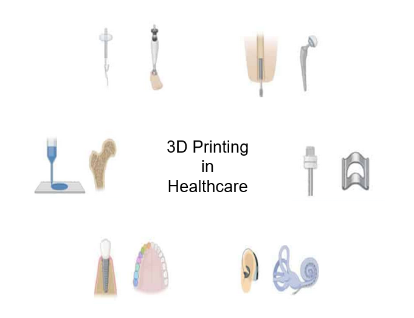

About this Toolkit
The Dynamic Toolkit is to put in order the various digital tools that can be used for designing and producing 3D printed models of any kind of medical implants, to systemize them according to a common format and to create a tool that can help the users to select the suitable tool for the right purpose.
All digital tools will be described according to a template considering different aspects: general description of the software/tool, specific purpose, functionalities, pros and cons, price (free-software preferred to other tools), availability of the tool to one of the Partner University. The toolkit will not include user-experience aspects of computer-aided design (CAD) software, e.g., computational power, ease of use, or other. The user will be able to choose, e.g., by ticking selections, from four different criteria and results will be provided in the form of a Table with proposed solutions.
Dynamic Toolkit is organised as an open online tool with searchable and downable items.
The language of the Dynamic Toolkit is English.
What is a CAD software
3D CAD, is a three-dimensional computer-aided design tool used to by designers, engineers, and architects to create industrial objects that iclude complex mechanisms. It helps to create functional, virtual prototypes of three-dimensional designs. A CAD software can be very specific, whether it is for industrial, mechanical, architectural or aeronautical engineering design.
CAD software tools allow designers to investigate design ideas, modify designs easily, visualize concepts through renderings, simulate how a design performs in the real world and draft documentation. Moreover, using cad software designers can share designs for feedback, and allow companies to get to market faster.
The benefits of 3D CAD softwares are the following:
- Rapid concept development
- Specialization
- Visualization
- Optimization
- Rapid manufacturing
3D CAD Softwares used in Healtcare
The medical device manufacturing industry is growing rapidly in order to keep up with the increased demand. Therefore, medical device product designers must create innovative medical products. Plenty of challenges are to be considered during manufacturing of medical equipment, with the most important among them being patient safety. Efficiency, effectiveness, and cost containment, are also very important to be considered.
Recent years have been marked by a growing interest in the creation of open science. This applies not only to the free sharing of content and research experience, but also in particular to the benefits of using open source systems. Many of the leading commercial software products have an analogue of open source software.
CAD software tools allow designers to investigate design ideas, modify designs easily, visualize concepts through renderings, simulate how a design performs in the real world, and draft documentation. Moreover, using cad software designers can share designs for feedback, and allow companies to get to market faster. In the biomedical field, CAD software is used for accurate modeling of complex geometries, customization, and patient-specific solutions, iterative design processes, simulation and analysis, collaboration, and communication, as well as facilitating manufacturing and production. More specifically CAD is necessary for the following reasons:
- Precise Design: Biomedical technology often involves intricate and complex designs, such as medical devices, implants, and prosthetics. CAD software allows engineers and designers to create precise and detailed 3D models of these components. It enables accurate representation of complex geometries, dimensions, and specifications, ensuring the design meets the required standards and functional requirements.
- Visualization and Simulation: CAD software provides visualization tools that allow designers to see the virtual representation of their designs in 3D. This visual feedback helps in assessing the aesthetics, ergonomics, and functionality of biomedical devices. Additionally, CAD software often includes simulation capabilities, allowing engineers to test the performance and behavior of the devices under different conditions. This simulation helps identify potential design issues and optimize the performance before physical prototyping.
- Customization and Personalization: Biomedical technology often requires customized and patient-specific solutions. CAD software enables the creation of personalized designs based on patient data, such as medical imaging scans. With CAD, engineers can precisely model and modify the design to fit the unique anatomy and needs of individual patients. This customization enhances the effectiveness and comfort of biomedical devices, leading to improved patient outcomes.
- Iterative Design Process: CAD software supports an iterative design process, where designers can make changes and refinements to their designs based on feedback and testing. The software allows for easy modification of design parameters, enabling rapid prototyping and evaluation of design iterations. This iterative approach leads to the development of optimized and efficient biomedical devices.
- Collaboration and Documentation: CAD software facilitates collaboration among multidisciplinary teams involved in biomedical technology development. It allows for the sharing and exchange of design files, enabling effective communication and feedback from clinicians, researchers, and manufacturers. Additionally, CAD software enables the creation of comprehensive design documentation, including detailed specifications, measurements, and material information. This documentation is essential for regulatory compliance, manufacturing, and quality control.
- Integration with Manufacturing Technologies: CAD software plays a crucial role in the integration of design with manufacturing technologies in biomedical engineering. The CAD models generated using the software can be directly used in various manufacturing processes, including additive manufacturing (3D printing), CNC machining, and mold fabrication. This integration ensures accuracy and consistency between the designed model and the manufactured product.
In summary, CAD is essential in biomedical technology for accurate design, visualization, and simulation, as well as for customization, iterative design processes, collaboration, documentation, and integration with manufacturing technologies. It boosts efficiency, accuracy, and innovation in developing biomedical devices, resulting in better healthcare outcomes.Some of the most used 3D CAD softwatres in the field of healthcare are MeshLab, SolidWorks, Blender, etc.